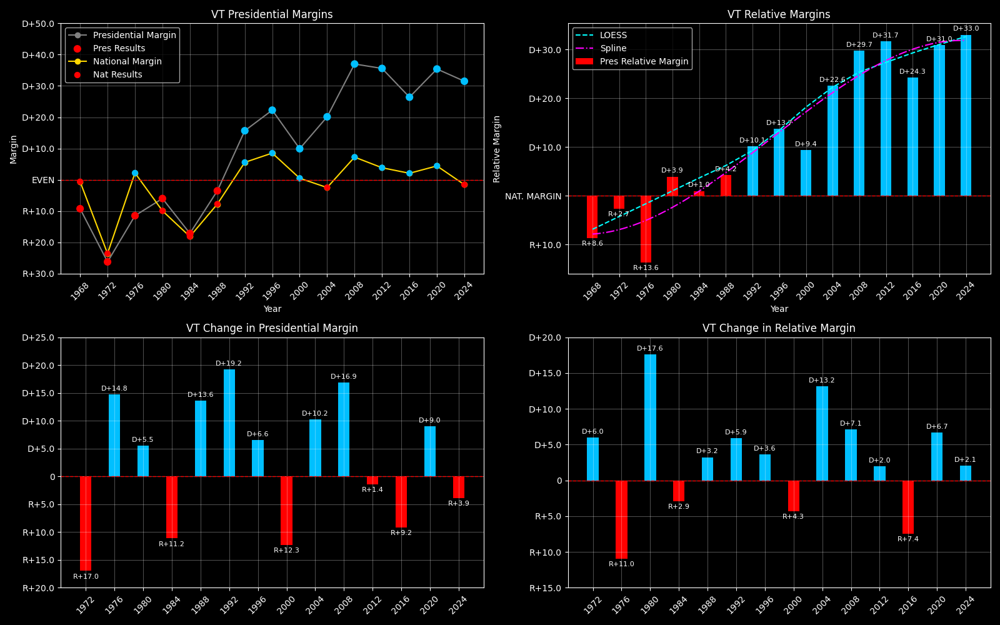

← Back to Map

Vermont (VT) statewide
Vermont (VT) — Data
| Year | EVs | D | R | Margin | Rel. Margin | Nat. Margin | Margin Δ | Rel. Margin Δ | Nat. Margin Δ | Other votes | Total votes |
|---|
| 1968 | 3 | 70,255(43.5%) | 85,142(52.8%) | R+9.6 | R+8.9 | R+0.7 | | | | 6,007(3.7%) | 161,404 |
| 1972 | 3 | 68,174(36.5%) | 117,149(62.7%) | R+26.4 | R+2.9 | R+23.6 | R+16.8 | D+6.0 | R+22.9 | 1,594(0.9%) | 186,917 |
| 1976 | 3 | 81,044(44.1%) | 102,085(55.5%) | R+11.5 | R+13.7 | D+2.2 | D+14.9 | R+10.8 | D+25.8 | 725(0.4%) | 183,854 |
| 1980 | 3 | 81,891(38.4%) | 94,598(44.4%) | R+7.2 | D+3.4 | R+10.6 | D+4.3 | D+17.1 | R+12.8 | 36,718(17.2%) | 213,207 |
| 1984 | 3 | 95,730(40.8%) | 135,865(57.9%) | R+17.3 | D+0.8 | R+18.1 | R+10.1 | R+2.6 | R+7.5 | 2,966(1.3%) | 234,561 |
| 1988 | 3 | 115,775(47.6%) | 124,331(51.1%) | R+3.6 | D+4.2 | R+7.8 | D+13.8 | D+3.4 | D+10.4 | 3,227(1.3%) | 243,333 |
| 1992 | 3 | 133,592(46.1%) | 88,122(30.4%) | D+20.5 | D+13.6 | D+6.9 | D+24.1 | D+9.4 | D+14.7 | 67,987(23.5%) | 289,701 |
| 1996 | 3 | 137,894(53.4%) | 80,352(31.1%) | D+26.4 | D+16.9 | D+9.5 | D+5.9 | D+3.3 | D+2.6 | 40,203(15.6%) | 258,449 |
| 2000 | 3 | 149,022(50.6%) | 119,775(40.7%) | D+10.9 | D+10.3 | D+0.5 | R+15.5 | R+6.5 | R+8.9 | 25,511(8.7%) | 294,308 |
| 2004 | 3 | 184,067(58.9%) | 121,180(38.8%) | D+20.6 | D+23.1 | R+2.5 | D+9.7 | D+12.7 | R+3.0 | 7,062(2.3%) | 312,309 |
| 2008 | 3 | 219,262(67.5%) | 98,974(30.4%) | D+37.8 | D+30.4 | D+7.4 | D+17.2 | D+7.3 | D+9.8 | 6,810(2.1%) | 325,046 |
| 2012 | 3 | 199,239(66.6%) | 92,698(31.0%) | D+36.5 | D+32.6 | D+3.9 | R+1.3 | D+2.1 | R+3.4 | 7,353(2.5%) | 299,290 |
| 2016 | 3 | 178,573(56.7%) | 95,369(30.3%) | D+30.4 | D+28.1 | D+2.2 | R+6.1 | R+4.4 | R+1.7 | 41,125(13.1%) | 315,067 |
| 2020 | 3 | 242,820(66.1%) | 112,704(30.7%) | D+36.6 | D+32.1 | D+4.5 | D+6.2 | D+3.9 | D+2.3 | 11,904(3.2%) | 367,428 |
| 2024 | 3 | 235,791(63.8%) | 119,395(32.3%) | D+32.8 | D+34.3 | R+1.6 | R+3.8 | D+2.3 | R+6.1 | 14,236(3.9%) | 369,422 |
Column explanations
- Year
- Election year.
- EVs
- Number of electoral votes allocated to this state or unit.
- D
- Number of votes for the Democratic candidate (raw count).
- R
- Number of votes for the Republican candidate (raw count).
- Margin
- Margin between the two major-party candidates ((D - R)/(D + R)).
- Rel. Margin
- The presidential margin relative to the national presidential margin (Margin - Nat. Margin).
- Nat. Margin
- The national presidential margin for that year ((D_total - R_total)/(D_total + R_total)).
- Δ
- Change (delta) in the value from the previous election year. Blank if no data for previous year.
- Other votes
- Number of votes for third-party (other) candidates (raw count).
- Total votes
- Total voter turnout or ballots cast (when provided).